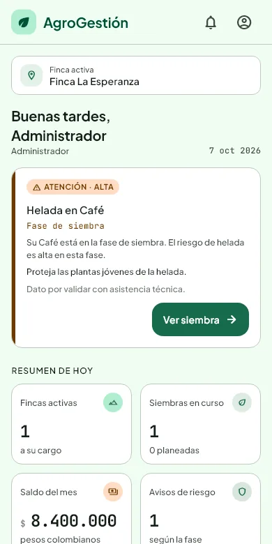
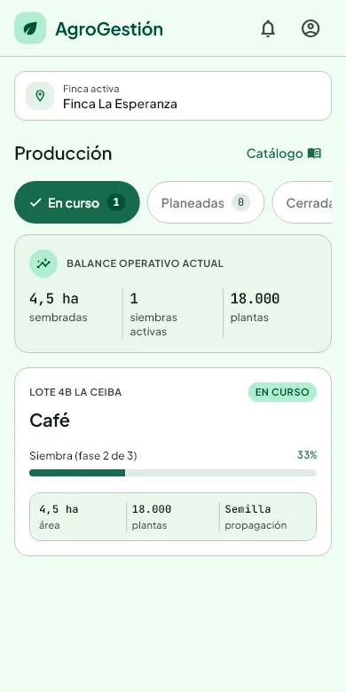
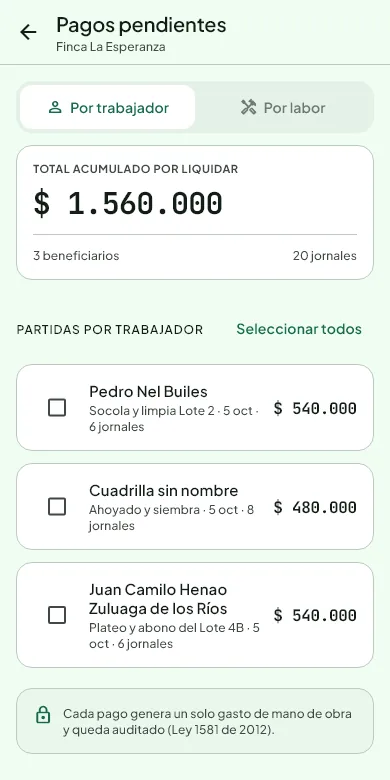
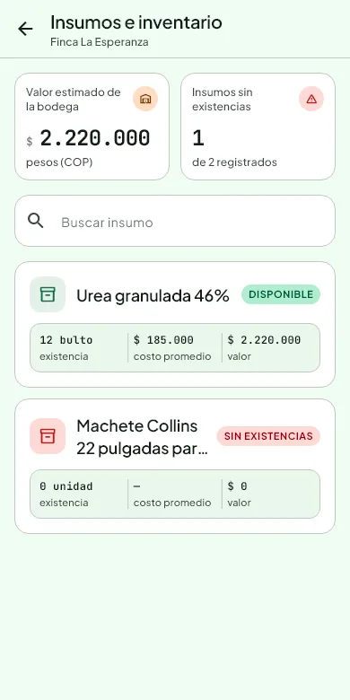
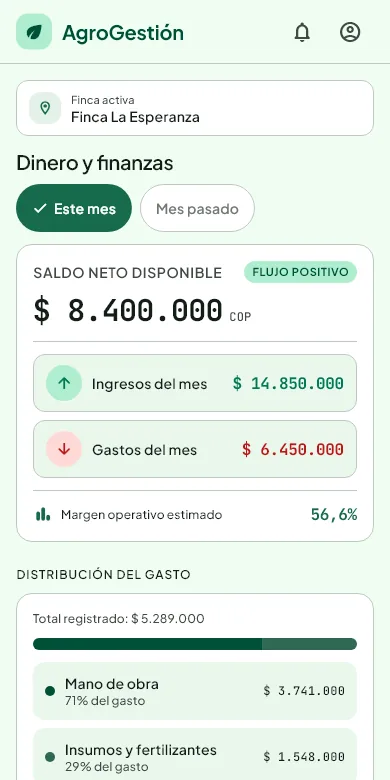

Siembras y producción
Siembras por lote, fases del cultivo, conteo de plantas y cronograma con retrasos.
Registre siembras, jornales, insumos y gastos desde el celular, incluso sin señal. Cuando vuelve el internet, todo se envía solo.
Sus datos se tratan según la Ley 1581 de 2012. Los documentos de los trabajadores se guardan cifrados.


Seis herramientas que ya funcionan hoy.
Siembras por lote, fases del cultivo, conteo de plantas y cronograma con retrasos.
Labores con trabajadores, días y valor del jornal. Los pagos pendientes quedan listos.
Entradas, consumos y kardex con el costo promedio de fertilizantes y herramientas.
Etapas con inicio y fin, como el secado de bijao, y el avance de cada proceso.
Gastos, ingresos y flujo de caja del mes, con el detalle de en qué se va el dinero.
Avisos de heladas o plagas según la fase del cultivo, más biblioteca y glosario.
Capturas de la aplicación con datos de ejemplo.



Pensado para zonas donde la señal va y viene.
Con señal, la app deja en el celular la información de la finca para consultarla después.
Gastos, ingresos, cosechas, labores e insumos se guardan y la app avisa que quedan pendientes.
Al recuperar la señal, los registros pendientes se envían sin repetirlos.
No. En el celular puede consultar lo último que vio y registrar sin señal. Lo pendiente se envía cuando vuelve el internet. Para entrar por primera vez sí se necesita conexión.
Solo las personas que usted autorice, cada una con su rol. En la política de privacidad está qué datos se usan y cuáles son sus derechos.
Porque la app aún no se ha publicado en la tienda. Android puede mostrar un aviso de Play Protect; es normal en apps que no vienen de la tienda. En Windows, SmartScreen puede avisar porque el programa aún no está firmado: pulse "Más información" y luego "Ejecutar de todos modos".
Puede abrir la versión web desde el navegador del iPhone. Todavía no hay una app para instalar en iPhone.